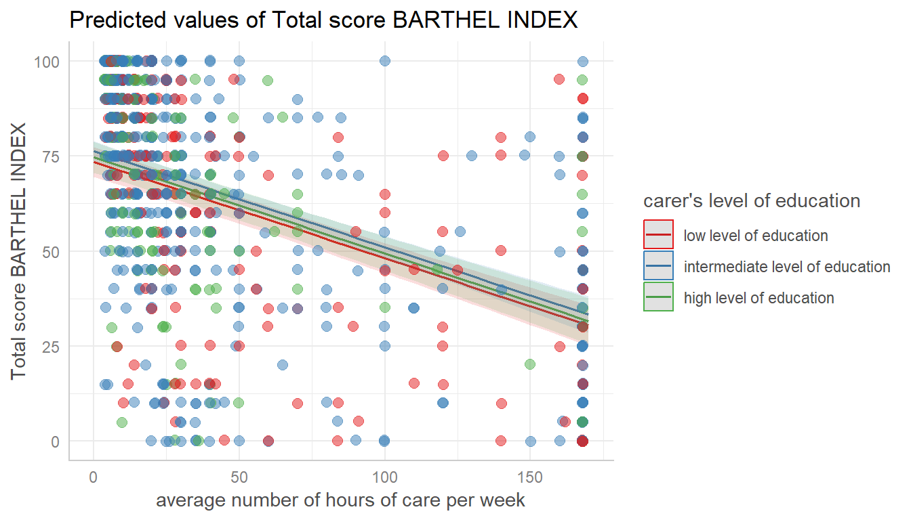
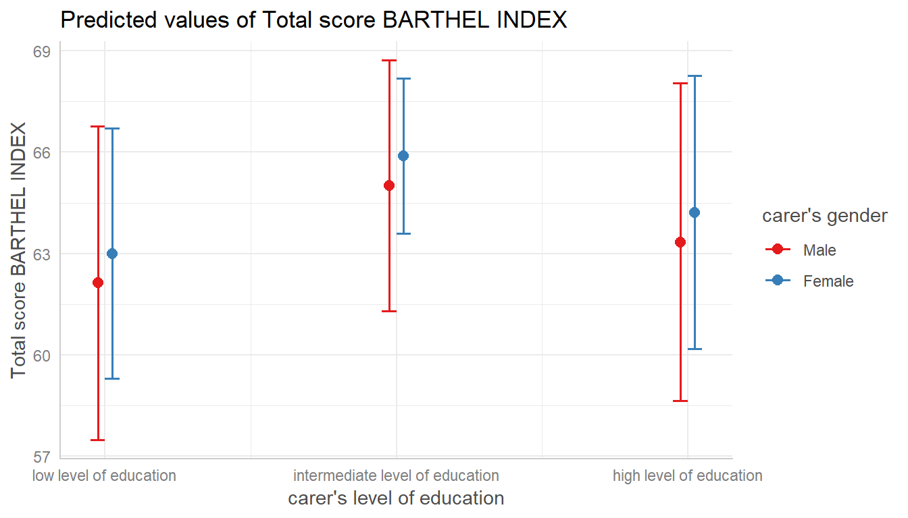
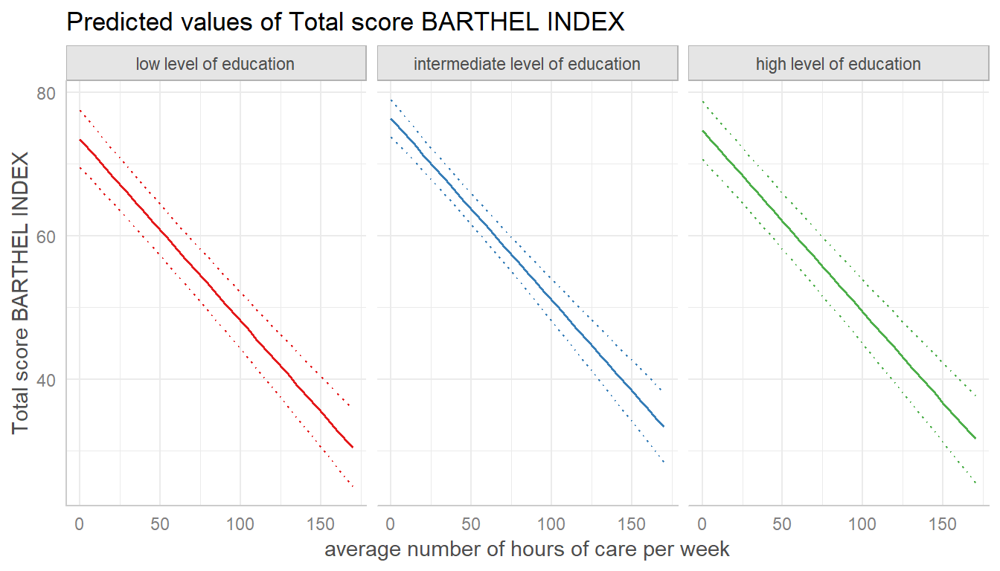
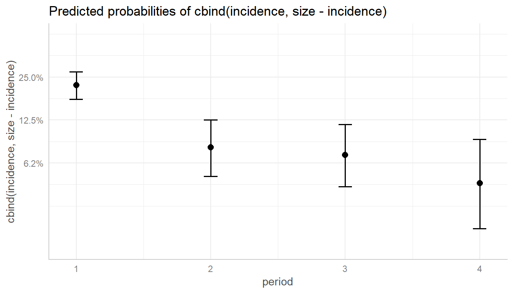
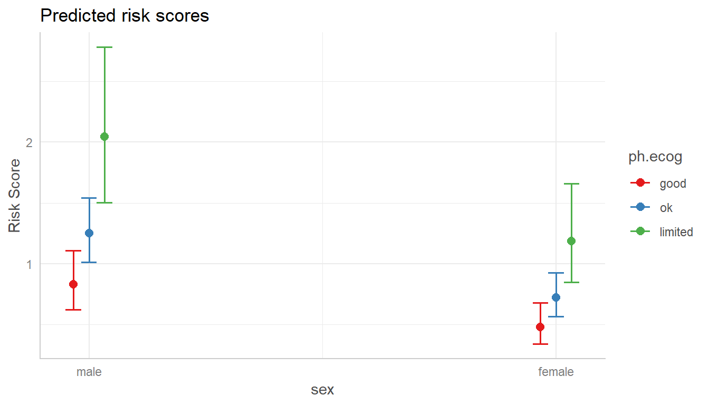

Plotting Marginal Effects
Daniel Lüdecke
2018-11-15
02_plotmethod.Rmdplot()-method
This vignettes demonstrates the plot()-method of the ggeffects-package. It is recommended to read the general introduction first, if you haven’t done this yet.
If you don’t want to write your own ggplot-code, ggeffects has a plot()-method with some convenient defaults, which allows quickly creating ggplot-objects. plot() has some arguments to tweak the plot-appearance. For instance, ci allows you to show or hide confidence bands (or error bars, for discrete variables), facets allows you to create facets even for just one grouping variable, or colors allows you to quickly choose from some color-palettes, including black & white colored plots. Use rawdata to add the raw data points to the plot.
library(ggeffects)
library(sjmisc)
data(efc)
efc$c172code <- to_label(efc$c172code)
fit <- lm(barthtot ~ c12hour + neg_c_7 + c161sex + c172code, data = efc)
# facet by group
dat <- ggpredict(fit, terms = c("c12hour", "c172code"))
plot(dat, facet = TRUE)
# don't use facets, b/w figure, w/o confidence bands
plot(dat, colors = "bw", ci = FALSE)

# for three variables, automatic facetting
dat <- ggpredict(fit, terms = c("c12hour", "c172code", "c161sex"))
plot(dat)
# categorical variables have errorbars
dat <- ggpredict(fit, terms = c("c172code", "c161sex"))
plot(dat)
Change appearance of confidence bands
In some plots, the the confidence bands are not represented by a shaded area (ribbons), but rather by dashed or dotted lines. Use ci = "dash" or ci = "dot" to change the style of confidence bands.

# facet by group
dat <- ggpredict(fit, terms = c("c12hour", "c172code"))
plot(dat, facet = TRUE, ci = "dot")
Log-transform y-axis for binomial models
For binomial models, the y-axis indicates the predicted probabilities of an event. In this case, error bars are not symmetrical.
if (requireNamespace("lme4")) {
m <- glm(
cbind(incidence, size - incidence) ~ period,
family = binomial,
data = lme4::cbpp
)
dat <- ggpredict(m, "period")
# normal plot, asymmetrical error bars
plot(dat)
}
Here you can use log.y to log-transform the y-axis. The plot()-method will automatically choose axis breaks and limits that fit well to the value range and log-scale.
if (requireNamespace("lme4")) {
# plot with log-transformed y-axis
plot(dat, log.y = TRUE)
}
Control y-axis appearance
Furthermore, arguments in ... are passed down to ggplot::scale_y_continuous() (resp. ggplot::scale_y_log10(), if log.y = TRUE), so you can control the appearance of the y-axis.
if (requireNamespace("lme4")) {
# plot with log-transformed y-axis, modify breaks
plot(
dat, log.y = TRUE,
breaks = c(.05, .1, .15, .2, .25, .3),
limits = c(.01, .3)
)
}
Survival models
ggpredict() also supports coxph-models from the survival-package and is able to either plot risk-scores (the default), probabilities of survival (type = "surv") or cumulative hazards (type = "cumhaz").
Since probabilities of survival and cumulative hazards are changing accross time, the time-variable is automatically used as x-axis in such cases, so the terms-argument only needs up to two variables.
data("lung", package = "survival")
# remove category 3 (outlier, not nice in the plot)
lung <- subset(lung, subset = ph.ecog %in% 0:2)
lung$sex <- factor(lung$sex, labels = c("male", "female"))
lung$ph.ecog <- factor(lung$ph.ecog, labels = c("good", "ok", "limited"))
m <- survival::coxph(survival::Surv(time, status) ~ sex + age + ph.ecog, data = lung)
# predicted risk-scores
pr <- ggpredict(m, c("sex", "ph.ecog"))
plot(pr)